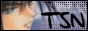

C L I Q U E S & W E B R I N G SThe following are cliques and webrings that Broken Echo has submitted to. Take a look and join them yourself!
« ? adoration # »Support
Sasame or Die!
About a Boy « # »
-----------------------------------------
Broken Echo is an AinoyumeNET production. Pretear was created by Kaori Naruse and Junichi Sato, © 2001. All rights reserved.